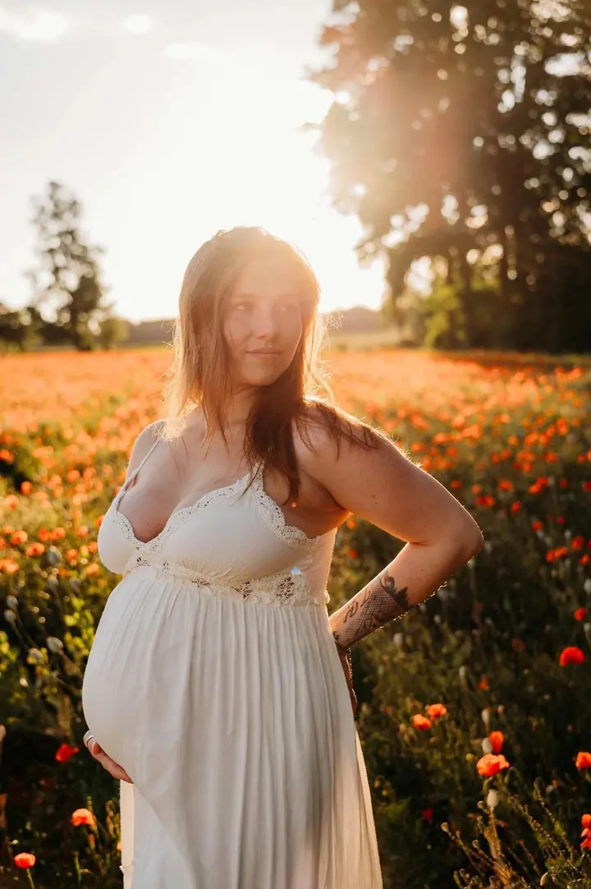
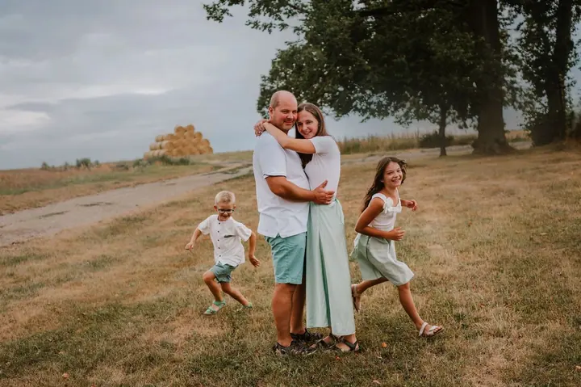
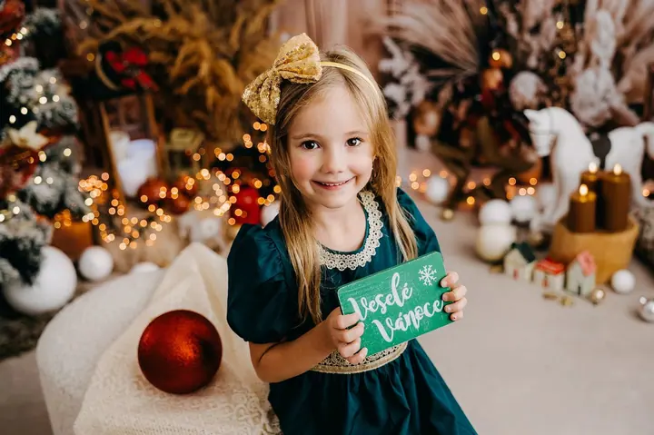

Novorozenecké focení
Aranžované focení pro miminka v prvních týdnech života, v jemných a bezpečných pozicích s dekami a rekvizitami. Pro miminka do 3 měsíců nabízím i přirozené focení SIMPLE, bez složitého aranžování, většinou v náručí rodičů.

Jmenuji se Irena Bublíková a fotím nastávající maminky, novorozence i celé rodiny z Tábora a okolí. Fotíme v klidu, v mém ateliéru v Sezimově Ústí nebo venku v přírodě. …
Rezervovat termínJsem rodinná fotografka z Tábora a nejčastěji fotím novorozence, miminka, těhotné maminky a rodiny. Fotím období, která utečou rychleji, než bychom si přáli: čekání na miminko, první dny v náručí, dětství i obyčejné rodinné chvíle, které se jednou stanou těmi nejcennějšími.


Je pro mě důležité, abyste se u focení cítili dobře. Žádný stres, spěch ani nepříjemné pózování. Vím, že děti potřebují čas na rozkoukání, a u miminek dbám hlavně na bezpečí, klid a respekt k jejich tempu. Jemně vás vedu, poradím, když je potřeba, a nechávám prostor pro dětský smích a objetí, které se naaranžovat nedají.
Většina focení probíhá v mém ateliéru v Sezimově Ústí. Venku můžeme fotit v historickém centru Tábora, v přírodě u Plané nad Lužnicí nebo na novém místě směrem na Borotín a Mladou Vožici. Moje práce nekončí stisknutím spouště. Chci, abyste odcházeli s pocitem, že focení byl příjemně strávený společný čas.
Co fotím
Aranžované focení pro miminka v prvních týdnech života, v jemných a bezpečných pozicích s dekami a rekvizitami. Pro miminka do 3 měsíců nabízím i přirozené focení SIMPLE, bez složitého aranžování, většinou v náručí rodičů.
Jemné a nadčasové fotografie z období, kdy čekáte miminko, v ateliéru i venku podle vašeho přání. Šaty si můžete zapůjčit z mého klientského šatníku.
Přirozené chvíle mezi rodiči a dětmi, v ateliéru nebo venku, často v podvečer, kdy je světlo nejpříjemnější. Vedle společných fotek vznikají i samostatné portréty dětí.
Tři vánoční scény plné světýlek a jemných dekorací v mém ateliéru v Sezimově Ústí. Je určené hlavně dětem, sourozencům a rodinám s menšími dětmi.
Fotografie jsou ilustrační
Postup
Napište nebo zavolejte a domluvíme typ focení, termín i místo. Když si nebudete s něčím jistí, ráda vám poradím.
Řekneme si, co si vzít na sebe a jak se na focení připravit. Na těhotenské focení si můžete zapůjčit šaty z mého klientského šatníku.
Fotíme v klidné atmosféře v ateliéru nebo venku. Dětem i miminkům dávám čas, který potřebují, a vás jemně navedu.
Fotografie si v klidu vyberete z online galerie. Vybrané snímky pečlivě upravím a pošlu vám je v plném rozlišení.
Otázky
Vůbec ne. Tyhle věty slýchám skoro před každým focením. Nikam nespěchám, jemně vás povedu a nechám prostor pro přirozené chvíle.
Aranžované novorozenecké focení je pro miminka v prvních týdnech života. Pokud je miminko už starší, je tu focení SIMPLE pro miminka až do 3 měsíců.
Většinou v mém ateliéru v Sezimově Ústí, Bydlinského 898. Venku fotím v historickém centru Tábora, v přírodě u Plané nad Lužnicí nebo asi 20 km od Tábora směrem na Borotín a Mladou Vožici.
Ano, připravila jsem pro vás zvýhodněný balíček SPOLU. Vznikne tak ucelená vzpomínka od bříška až po první objetí.
Vánoční focení 2026 stojí 3 500 Kč a probíhá od 28. 10. do 17. 11. 2026 v 30minutových blocích. Online galerii k výběru vám pošlu do 3 dnů a upravené fotografie do 14 dní od vašeho výběru.